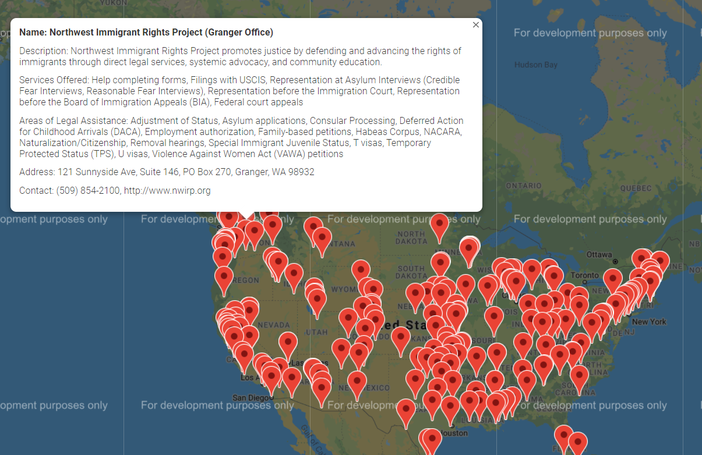

This was my first ever project I attempted just by myself! I created this immigration resources map during the summer before my first year at UW. The main tools for this were HTML and Google Maps API. It's a bit rudimentary and doesn't have much functionality but I was very proud of it at the time and I still use this project as a progress benchmark to see how far I've come! The map is interactive and marks the locations of free or low-cost immigration services along with listing the services provided at each location.
View the project here!